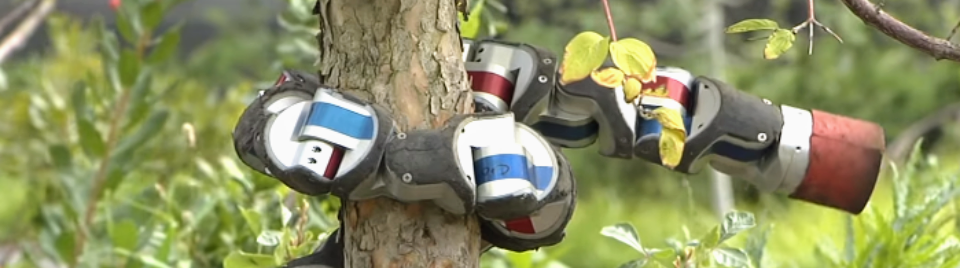
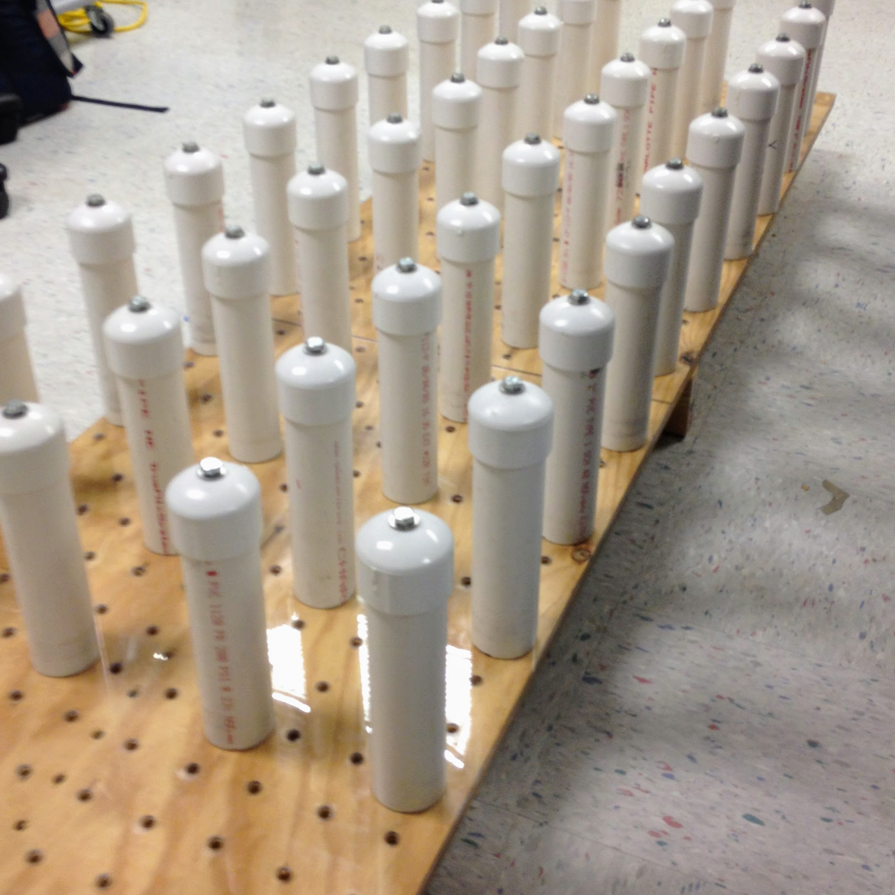

Carnegie Mellon BioRobotics Lab
Peg Board
 The lab was working with a team at Georgia Tech so that we could better mimick a real snake with our robotic version. To do this, we needed to manufacture a scale version of the testing course that they had their snake running through. The board was made out of wood and had an acrylic sheet placed on top as we wanted the snake robot to have to push off of the pegs in order to get through the course rather than using a grippy ground surface.
After creating the peg board, I spend a couple of weeks with another member of the lab to do data collection. We would have the snake go through the course and film it from above while timing it. We would repeat this multiple times to get a sufficent sample size, then we would change the peg spacing and repeat. This allowed us to not only get side by side comparison to the real snake, but allowed us to have a controlled environment so that we could get objective results.
Silicone Ring
The other project I worked on during my summer in the lab was a protective silicone ring. There was a project to place souch senitive sensors onto the snake as a module. What we needed to do was come up with a method to protect the senors while still allowing them to be accessed for modification as well as maintain their ability to sense the environment around them.
What I designed was a ring that had 12 'bumps'. The bumps were able to individually colapse such that when it came into contact with a surface it would colapse and contact the touch sensor. In order to make the ring flexible, I 3D printed the ring and then used it to create a negative mold which I then was able to use to make silicone rings. The ring was a success, unfortunatley the lab stopped exploring the sensor module shortly after I left.